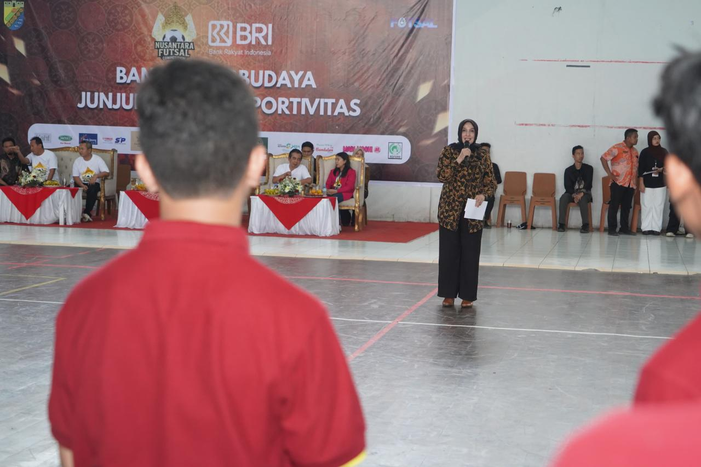
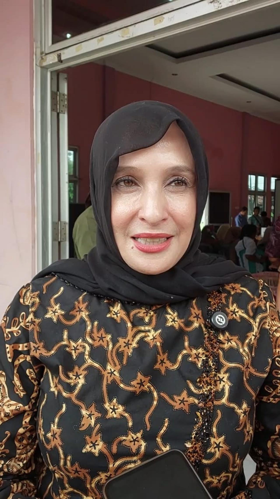
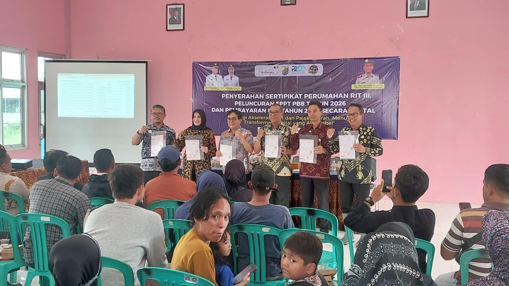
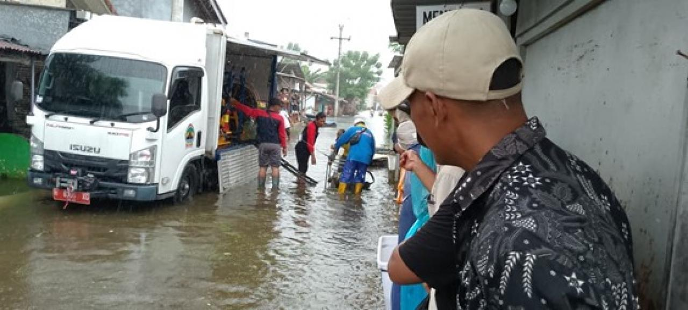
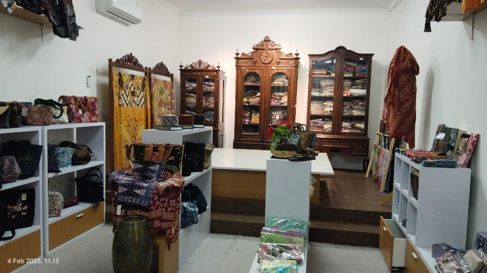
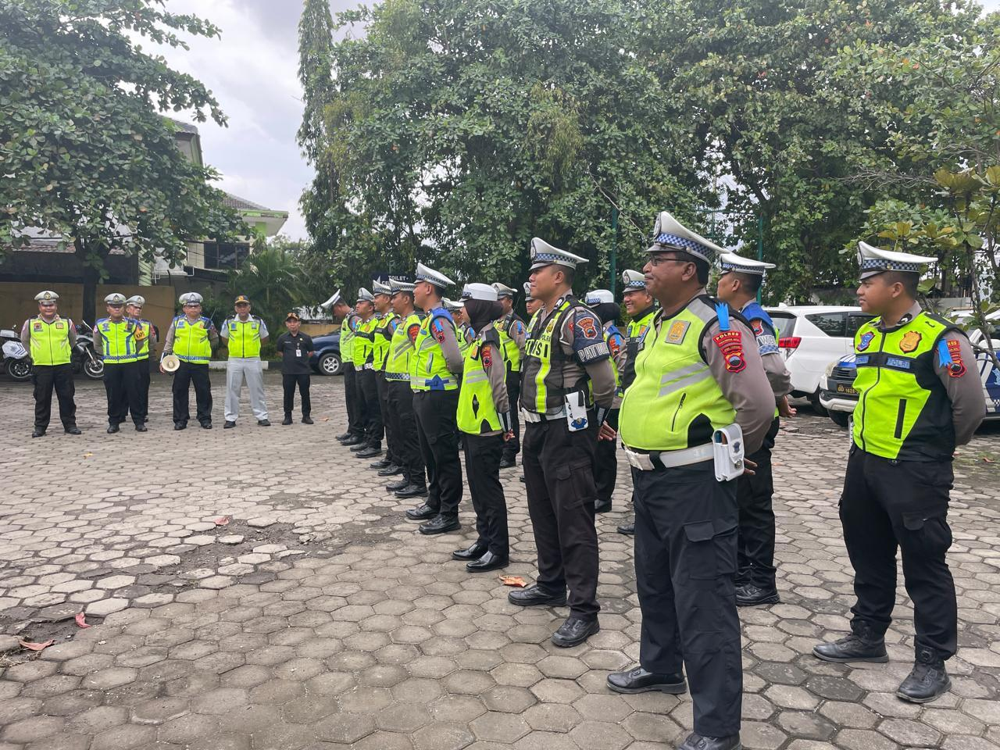
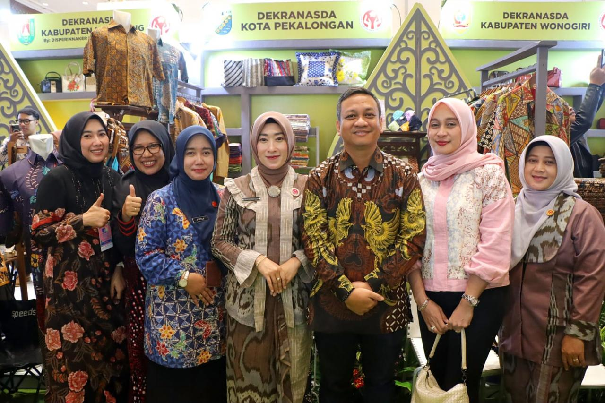

Daftar Pengumuman RSUD Bendan

6 FEBRUARI 2026
Gali Atlet Muda, Futsal Nusantara Competition Kota Pekalongan Resmi Dibuka
6 FEBRUARI 2026
Respon Cepat Banjir, DPUPR Kota Pekalongan Mobilisasi Pompa Mobile ke Wilayah Terdampak

6 FEBRUARI 2026
Mulai Tahun 2026, Pemkot Pekalongan Terapkan Pembayaran PBB Digital

6 FEBRUARI 2026
Pemkot Pekalongan Optimalkan Gedung Dekranasda Jadi Pusat Peningkatan Kapasitas Pelaku Kreatif

6 FEBRUARI 2026
Curah Hujan Tinggi Picu Genangan Kembali, Pemkot Pekalongan Siapkan Langkah Cepat

6 FEBRUARI 2026
Operasi Keselamatan Candi 2026, Petugas Gabungan Ajak Warga Tertib Berlalu Lintas

5 FEBRUARI 2026
Pemkot Serahkan 44 Sertifikat Rumah Inti Tumbuh Kandang Panjang

5 FEBRUARI 2026
Dekranasda Kota Pekalongan Dorong UMKM Tembus Pasar Dunia Lewat INACRAFT 2026
1
2
3
arrow_upward